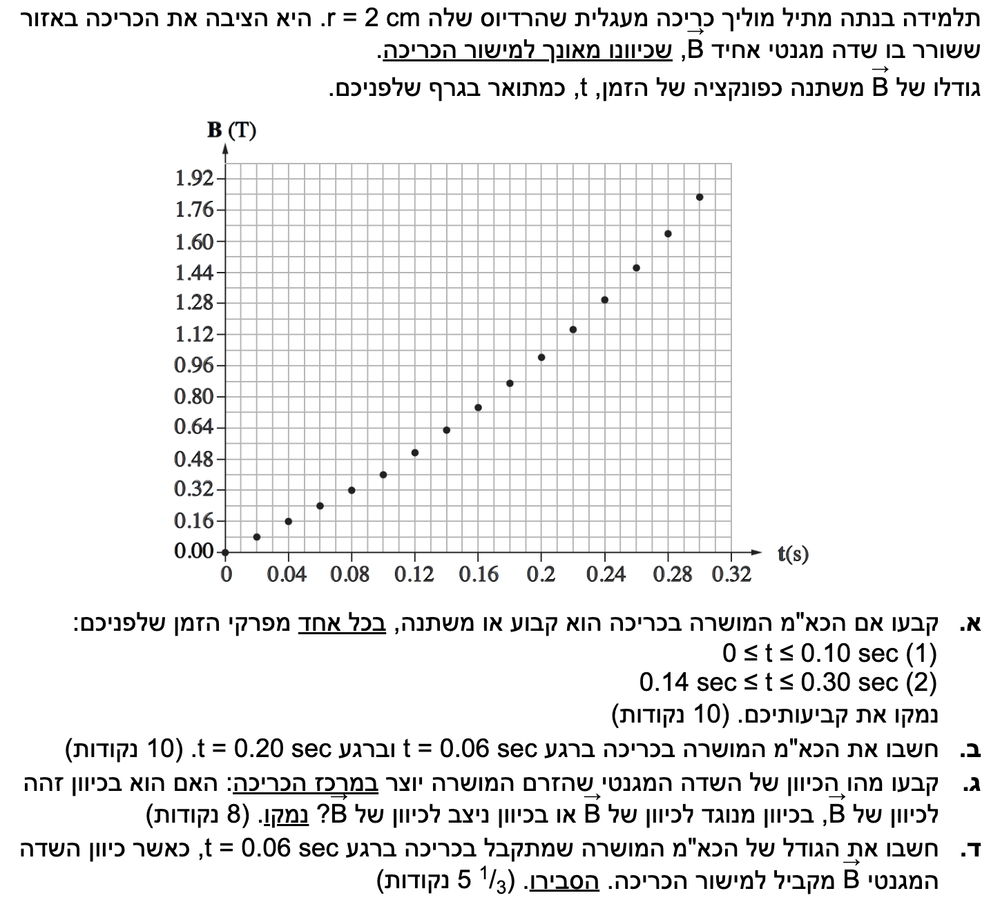

השאלה עוסקת בתופעת ההשראה האלקטרומגנטית. נתון לנו שדה מגנטי חיצוני שמשתנה בזמן בתוך אזור שבו נמצאת כריכה מוליכה. השינוי בשדה המגנטי גורם לשינוי בשטף המגנטי דרך הכריכה, מה שמוביל ליצירת כוח אלקטרו-מניע (כא"מ) מושרה על פי חוק פארדיי.
אנו נדרשים לנתח את השתנות הכא"מ לאורך זמן באמצעות קריאה מדויקת מגרף נתונים (שימת לב מיוחדת להבחנה בין קטע ליניארי לקטע עקום), לחשב את גודלו בנקודות זמן שונות, ולמצוא את כיוון השדה המגנטי המושרה באמצעות חוק לנץ.

[תמונת השאלה המקורית]לא נמצאה תמונה בשם question-image.png באותה תיקייה.
סעיף א': קביעת התנהגות הכא"מ המושרה
מה נתון:
כריכה מעגלית אחת (\(N=1\)).
השדה המגנטי \(\vec{B}\) מאונך למישור הכריכה, ולכן הזווית בין השדה לאנך למישור (וקטור השטח \(\vec{A}\)) היא \(\alpha = 0^{\circ}\).
גרף של גודל השדה המגנטי \(B\) כפונקציה של הזמן \(t\).
שטח הכריכה (\(A\)) קבוע.
מה מחפשים: לקבוע האם הכא"מ המושרה בכריכה הוא קבוע או משתנה בשני פרקי זמן: (1) \(0 \le t \le 0.10\) שניות, (2) \(0.14 \le t \le 0.30\) שניות, ולנמק.
מכאן אנו מסיקים שהכא"מ המושרה (\(\varepsilon\)) נמצא ביחס ישר לקצב ההשתנות של השדה המגנטי עם הזמן, המיוצג על ידי שיפוע הגרף בנקודת הזמן.
בפרק הזמן \(0 \le t \le 0.10\) s: הגרף הוא קו ישר, ולכן שיפועו קבוע לאורך כל הקטע. לפיכך, הכא"מ המושרה קבוע בפרק זמן זה.
בפרק הזמן \(0.14 \le t \le 0.30\) s: אם נתבונן היטב, הגרף בחלק זה אינו קו ישר אלא עקומה (דמוית פרבולה) שהולכת ונהיית תלולה יותר. מאחר שהשיפוע של הגרף אינו קבוע אלא משתנה (גודלו גדל), נובע מכך שהכא"מ המושרה משתנה.
בפרק הזמן \(0 \le t \le 0.10 \text{ s}\), הכא"מ המושרה הוא קבוע.בפרק הזמן \(0.14 \le t \le 0.30 \text{ s}\), הכא"מ המושרה הוא משתנה.
טיפ מורה: מה משמעות המינוס בנוסחת פארדיי?
בואו נתעכב רגע על הנוסחה \(\varepsilon = -N \frac{\Delta \Phi_B}{\Delta t}\). סימן המינוס אינו "סתם" מתמטיקה, אלא הלב של חוק לנץ. הוא אומר לנו שהכא"מ המושרה תמיד יפעל להתנגד לשינוי בשטף. חשוב להבין לעומק: הוא לא תמיד מנוגד לכיוון השדה החיצוני! ההתנגדות היא לשינוי בלבד. אם השטף גדל (השינוי חיובי), המינוס דואג שהכא"מ ייצור שדה מנוגד. אך אם השדה החיצוני היה קטן (השינוי שלילי), "מינוס כפול מינוס נותן פלוס" – כלומר, הכא"מ ייצור שדה באותו כיוון של השדה החיצוני כדי "לתמוך" בו ולפצות על האובדן. בקיצור, הכא"מ המושרה הוא המנגנון של המערכת לשמור תמיד על הסטטוס-קוו (המצב הקיים)!
נקודה זו נמצאת בקטע הראשון (הליניארי) של הגרף. בקו ישר השיפוע זהה בכל נקודה, לכן נבחר שתי נקודות נוחות לקריאה על הקו, למשל \((0, 0)\) ו-\((0.10, 0.40)\), כדי לחשב את שיפועו הקבוע של הקטע:
נקודה זו נמצאת בקטע השני של הגרף, שהוא קטע עקום (שיפועו משתנה). כדי להעריך את קצב השינוי הרגעיו (\(\frac{\Delta B}{\Delta t}\)) בנקודה זו, נשתמש בטריק מתמטי של ממוצע: ניקח שתי נקודות קרובות וסימטריות משני צידי הנקודה המבוקשת – הנקודה שלפני (\(t = 0.18 \text{ s}\)) והנקודה שאחרי (\(t = 0.22 \text{ s}\)).
נקרא את הערכים במדויק מתוך הגרף עבור נקודות אלו:
\(B(0.18) = 0.89 \text{ T}\)
\(B(0.22) = 1.15 \text{ T}\)
נחשב את השיפוע הממוצע בין שתי נקודות אלו כדי לקבל קירוב מדויק לשיפוע הרגעי ב-\(t=0.20\):
ברגע \(t = 0.06 \text{ s}\), גודל הכא"מ הוא \(5.03 \cdot 10^{-3} \text{ V}\).ברגע \(t = 0.20 \text{ s}\), גודל הכא"מ הוא \(1.01 \cdot 10^{-2} \text{ V}\).
טיפ מורה: זוכרים קינמטיקה?
הטריק המתמטי שהשתמשנו בו עכשיו (חישוב בעזרת "הנקודה שלפני והנקודה שאחרי") צריך להיות מוכר לכם היטב ממעבדות המכניקה! כשניתחנו סרט של רשם-זמן ורצינו למצוא את המהירות הרגעית בנקודה מסוימת, מה עשינו? לקחנו את הנקודה העוקבת פחות הנקודה הקודמת, וחישבנו ממוצע: \(v \approx \frac{\Delta x}{\Delta t}\). אותו עיקרון מתמטי עובד כאן בצורה נפלאה כדי להעריך שיפוע של משיק מבלי לשרטט אותו בפועל. מדובר בהערכה שהיא לרוב מדויקת מאוד.
סעיף ג': כיוון השדה המגנטי המושרה
מה נתון: כיוון השדה המגנטי החיצוני (\(\vec{B}\)) מאונך למישור הכריכה. מתוך הגרף עולה כי גודל השדה המגנטי הולך וגדל.
מה מחפשים: לקבוע מהו כיוונו של השדה המגנטי שיוצר הזרם המושרה במרכז הכריכה ביחס לשדה החיצוני (זהה, מנוגד, ניצב).
עקרונות בשימוש: חוק לנץ
ניתוח לפי חוק לנץ:
מתוך הגרף עוצמת השדה המגנטי החיצוני (\(\vec{B}\)) גדלה עם הזמן. מאחר ששטח הכריכה קבוע, משמעות הדבר היא שהשטף המגנטי דרך הכריכה הולך וגדל. לפי חוק לנץ, המערכת תתנגד לשינוי הזה בשטף.
כדי להתנגד לגידול בשטף, הזרם המושרה יצור שדה מגנטי משלו (\(\vec{B}_{ind}\)) אשר כיוונו מנוגד לשדה המקורי, כדי לנסות ולבטל את ה"תוספת".
מסקנה: כיוונו של השדה המגנטי המושרה הוא בכיוון מנוגד לכיוונו של השדה החיצוני.
טיפ מורה: למה לא שאלו מהו כיוון הזרם במעגל?
תלמידים חדי עין ודאי שמו לב למשהו חסר: השאלה מבקשת את כיוון השדה המושרה ביחס לשדה המקורי, אך לא שואלת אם הזרם בכריכה זורם עם או נגד כיוון השעון. למה? כי הגרף והמלל מספקים רק את גודל השדה המגנטי! אנחנו לא יודעים אם השדה המקורי פונה "לתוך הדף" או "החוצה מהדף". חוק לנץ אמנם מבטיח לנו שהשדה המושרה יתנגד לגידול ויהיה בכיוון מנוגד לשדה החיצוני, אבל בלי לדעת לאן השדה החיצוני מכוון במרחב, איננו יכולים להפעיל את כלל יד ימין הראשון ולקבוע את כיוון הזרם המדויק. חשוב מאוד: תמיד עבדו רק עם הנתונים המפורשים ואל תניחו הנחות לגבי כיוונים שלא מצוינים בשאלה!
סעיף ד': שדה מקביל למישור
מה נתון: ברגע \(t = 0.06 \text{ s}\), כיוון השדה המגנטי \(\vec{B}\) מקביל למישור הכריכה.
מה מחפשים: לחשב את גודל הכא"מ המושרה במצב הנתון החדש ולהסביר.
מסקנה: גודל הכא"מ המושרה הוא 0 V, מכיוון שלא עוברים קווי שדה דרך השטח שלה ואין שינוי בשטף.
טיפ מורה:
זכרו היטב: הזווית \(\alpha\) בנוסחת השטף אינה הזווית בין השדה למשטח עצמו, אלא הזווית בין השדה לאנך למשטח! אם השדה "מחליק" על המשטח מבלי לחדור אותו, השטף אפס.
נוסח השאלה המקורית
[תמונת השאלה המקורית]לא נמצאה תמונה בשם question-image.png.